Feature design · UX research
A redesign that makes Close Friends feel a little more real.
Instagram is built around sharing moments through Stories, Posts, and Reels. Close Friends allows users to share Stories with a smaller audience, but currently assumes everyone's inner circle is one group. This redesign explores a more flexible approach that better reflects how people actually share different parts of their lives.
Instagram’s Close Friends feature assumes your inner circle is one group. For most people, it isn’t. This concept actually started during a conversation with a coworker about how limiting the current Close Friends feature feels once your life starts existing in different spaces. We realized Instagram treats “Close Friends” as one audience, when realistically, people share different parts of themselves with different groups.
Some people want a space for family, gym content, dating content, memes, or their actual closest friends. Right now, users either over share to one giant list, alter the list every time they post or decide not to post at all.
To validate the idea further, I searched Reddit to see if other users felt the same way and found multiple requests for this exact feature. One post specifically mentioned wanting separate story lists for different groups of friends. That helped confirm this wasn’t just a personal frustration, but an actual user need.
"It would be really cool and awesome if you could have multiple close friends story's similar to snapchats private story features. It would lessen the amount of spam accounts or whatever too i feel. I mostly want it because i have certain friends who would enjoy certain things and others who don't, ie a story to post music and a story to post myself."
The goal of this redesign was to make the feature feel native to Instagram. Rather than introducing a new sharing system, I wanted multiple Close Friends lists to feel like a natural extension of an interaction users already understood. Any new functionality needed to fit within Instagram's existing design language, reuse familiar patterns like bottom sheets and list management, and keep the experience lightweight enough that creating multiple audiences felt effortless rather than another feature to maintain.
The first area I focused on was list creation. Instead of one singular Close Friends list, users can create multiple lists directly within the existing Close Friends settings flow. If no lists exist yet, users are prompted to create one. From there, they can name the list and choose which followers belong in it.
I also included the ability to delete lists. Instead of using a swipe gesture, the delete interaction follows a press-and-reveal pattern similar to Instagram messages. Swiping already has a strong navigation behavior throughout Instagram, so reusing it for deletion could create friction and accidental actions.
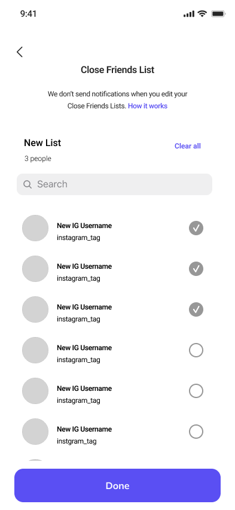
Users can create their close friends list here. They can name the list and select which followers will be included.
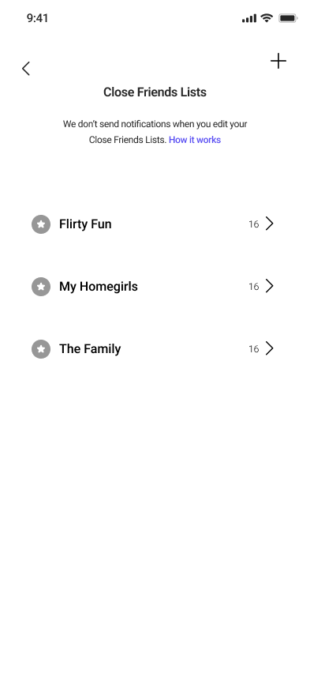
This screen is a new addition, allowing users to view their multiple close friends list. From here they can edit or delete list.
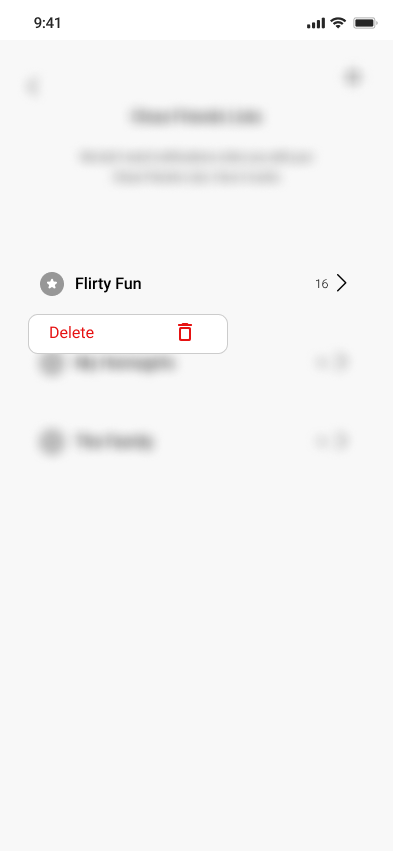
Following the current Instagram delete functionality, users can hold down a list to delete it.
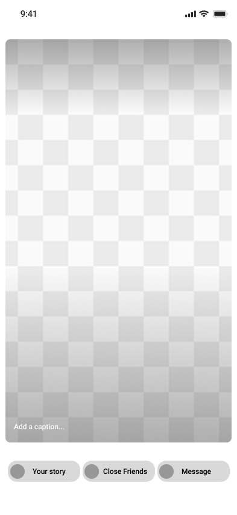
Users can select how they want to post their story. If they select close friends, it will bring them to the next screen.
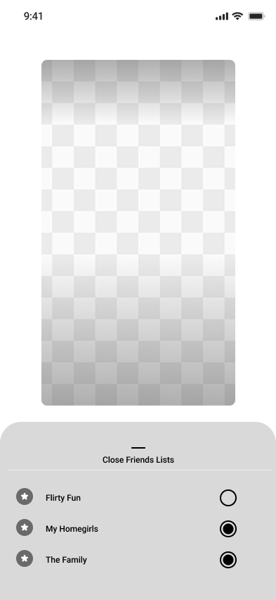
From here, the user can select which close friend list they want to post their story to.
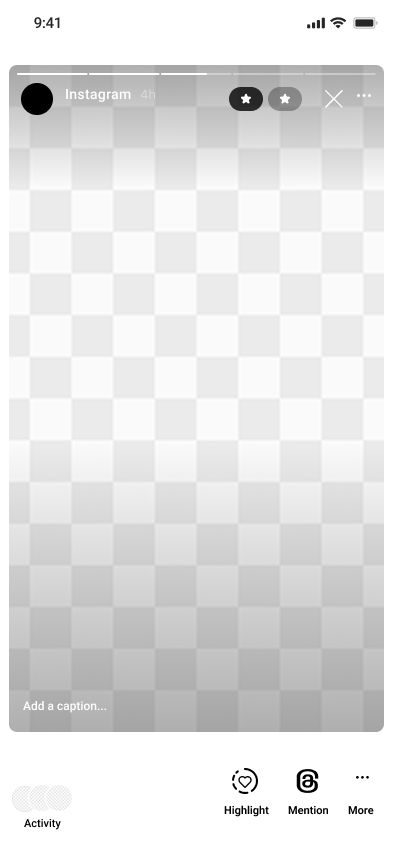
When users view their story, they can see which list they posted to based on the close friends stars.
When posting a story, users can choose which Close Friends list they want to share to through the same style of bottom sheet selector Instagram already uses throughout the app. The experience supports multi-select because some content naturally overlaps between groups. A user might want to share something with both their “Family” and “College Friends” lists without reposting the same story twice.
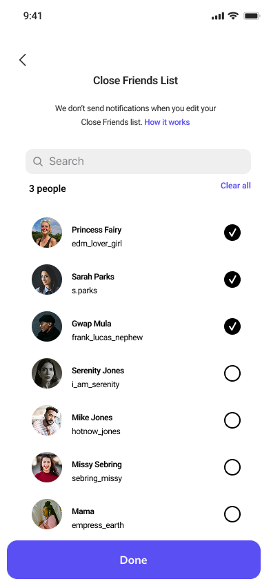
The current Close Friends Feature only allows you to create one close friends list. You can't create separate list for different groups of friends.
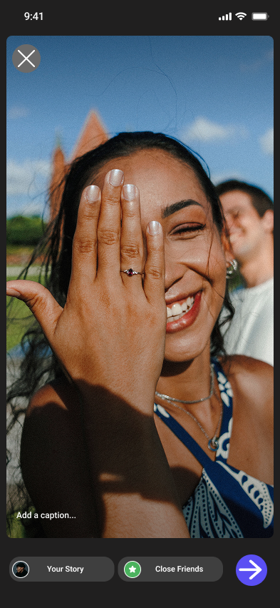
When you go to post a story, users can choose to post to their main story, close friends story, or select the arrow to reveal a menu with a third message option.
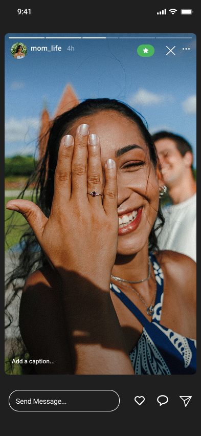
When you post a story to your close friends list, it's visable to everyone included. You have to manually update the list to control who can see what each time.
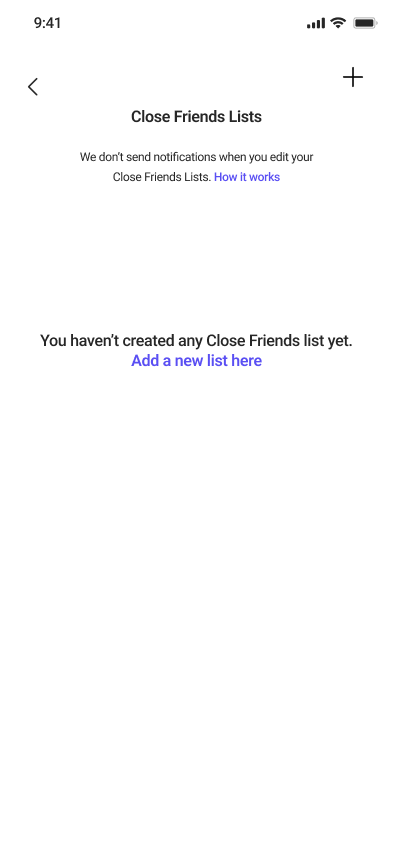
Users can either use the + sign at the top left, or click on the prompt to create a new list. The + symbol follows Instagrams current "add new" functionality on the home screen.
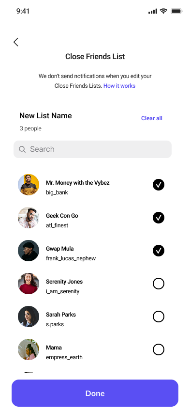
Lists can be created and edited from this page. Users can name their list and select which followers should be included.
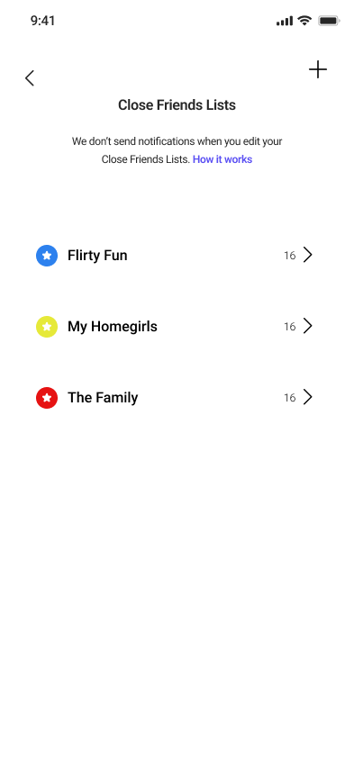
Color coded icons are randomly assigned when the list is created to help users differentiate and limit decision fatigue.
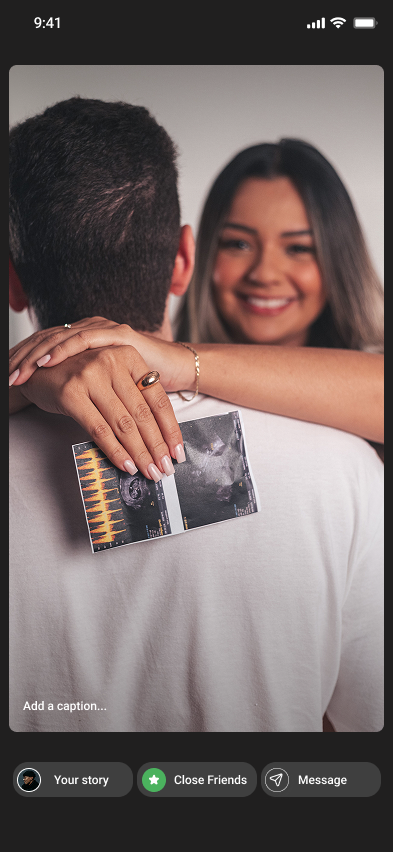
Currently, users have the option to post to their main story, close friends, or select an arrow to reveal a menu to send a message. I reduced clicks by adding the messages to the main post screen.
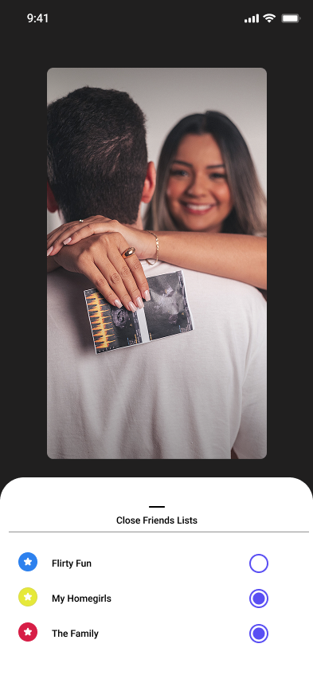
If close friends is selected, users will be shown all their list options, and they can select which lists they want to post to.
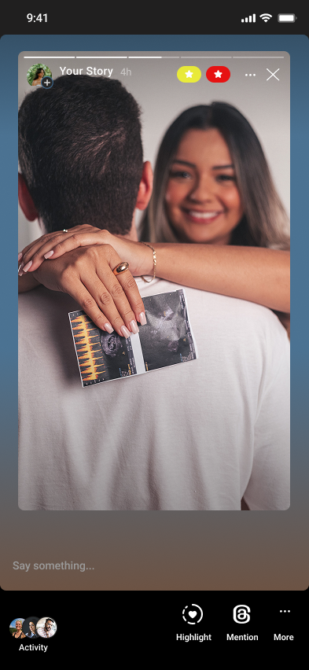
This is where users can view which lists they posted their story to. The different icons represent the randomly assigned color labels.
One potential challenge with this redesign is scalability. Managing multiple lists, especially more than five, could become overwhelming for some users. It may also become harder to manage followers who belong to multiple lists at once. For example, if someone views a story and belongs to multiple lists, it may be unclear which list granted them access. There’s also a risk of visual clutter on the story viewer if multiple color indicators are displayed at once. One possible solution could be a simplified “Post to All Close Friends” option that works similarly to the current Close Friends experience.
Another challenge to call out is accessibility. Relying on colors alone to label Close Friends lists may make it difficult for some users to differentiate between audiences. An additional indicator or label system may need to be introduced.
Even with those challenges, I believe this feature solves a much messier workaround that already exists today, where users manually add and remove people from their Close Friends list or wait for stories to expire before changing visibility again.
Instagram established itself as a memory sharing app, whether it be through reels, posts, or stories. This app was built to share, but not everything is meant to be shared with everyone. This feature allows users to share in a more personal and intentional way.